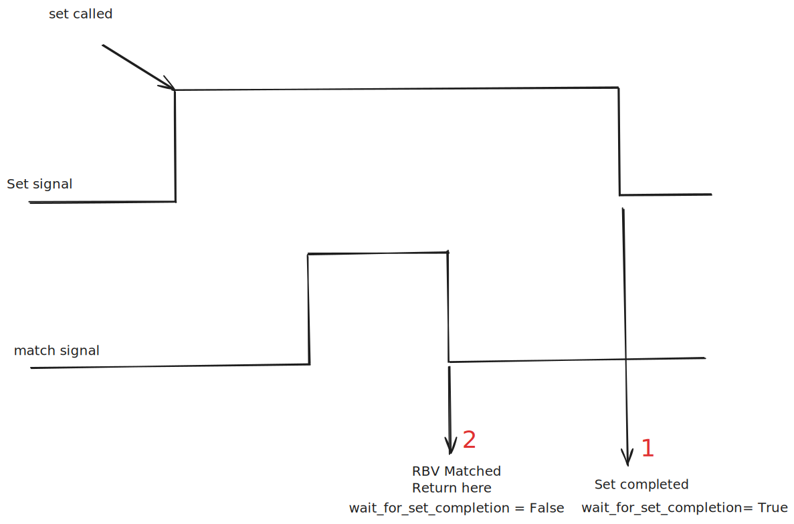

set_and_wait_for_other_value#
The set_and_wait_for_other_value function (defined in _signal.py) is a utility designed to:
Set a signal.
Wait for another signal to reach a specified value (
match_value).
The behavior of the function depends on the value of the wait_for_set_completion parameter:
If
wait_for_set_completion = True:
The function returns at 1 (see diagram below), which occurs when the “set operation” is complete.If
wait_for_set_completion = False:
The function returns at 2, which occurs when thematch_signalreaches thematch_value.
In AreaDetector, the wait_for_set_completion parameter should generally be set to False, as the preferred behavior is to return when the match_signal achieves the match_value.
Behavior Diagram:#

Example Usage#
# Example code snippet for using set_and_wait_for_other_value in an AreaDetector driver
self._arm_status = set_and_wait_for_other_value(
self._drv.arm,
1,
self._drv.state,
"ready",
timeout=DEFAULT_TIMEOUT,
wait_for_set_completion=False,
)
In this AreaDetector driver, the function ensures that the detector’s arm_status reaches "ready" before capturing data. To achieve this:
The detector is instructed to transition to the “armed” state by setting the driver’s
armsignal to1.The function waits until the driver’s
statesignal equals"ready".
This approach ensures that data capture is only initiated once the detector is fully prepared.